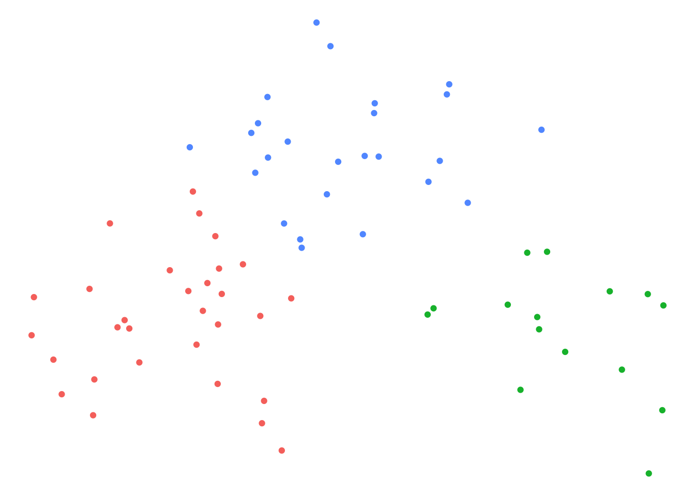
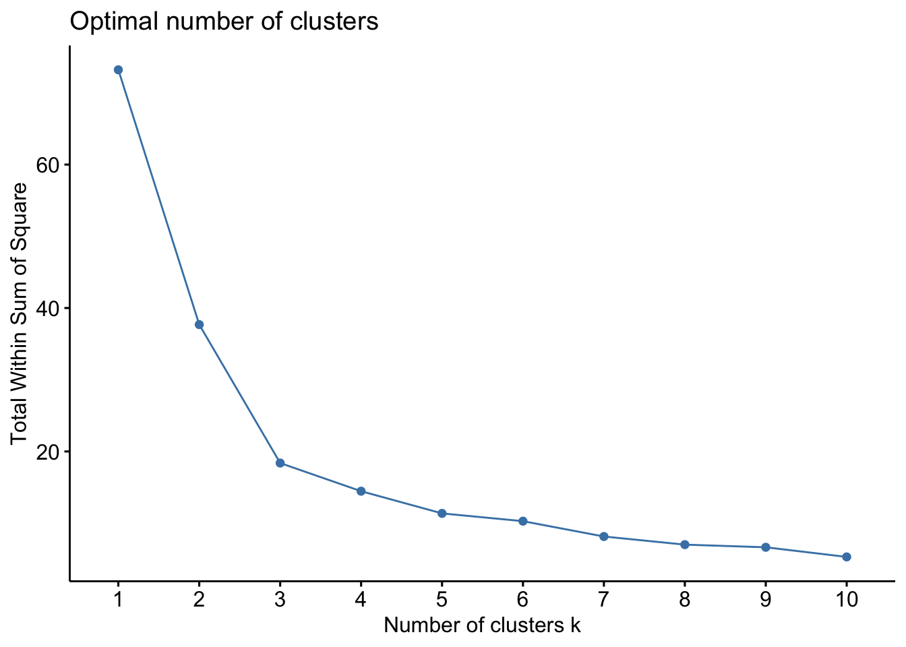
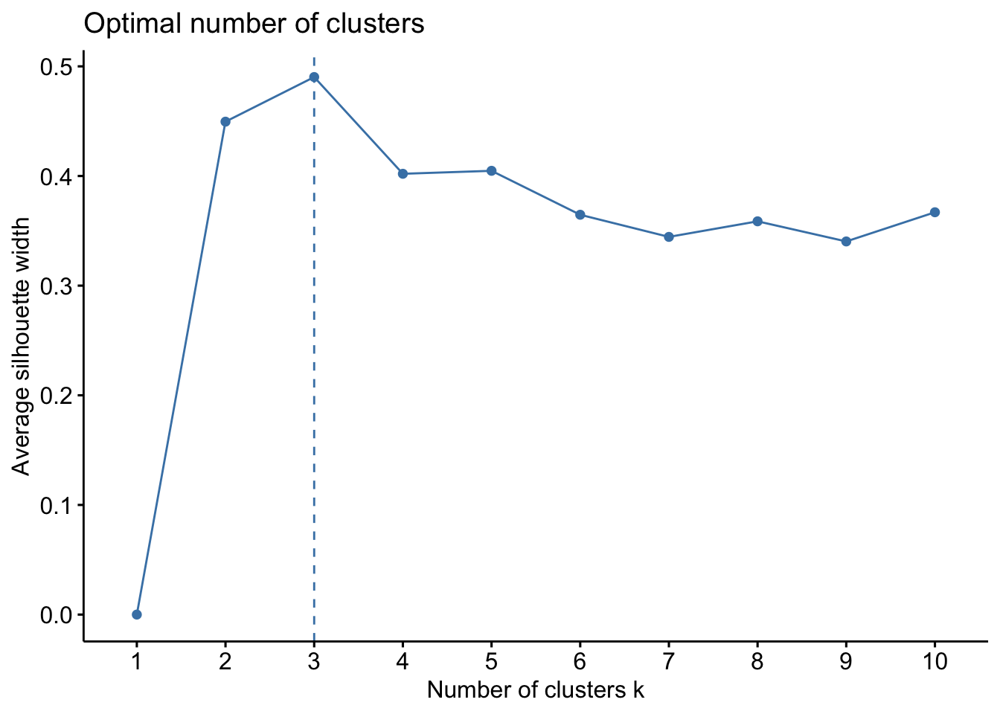
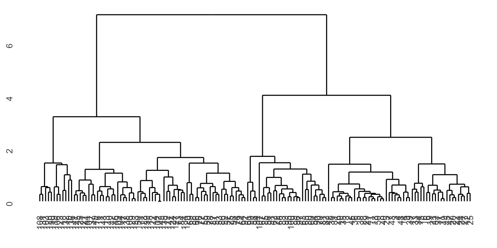
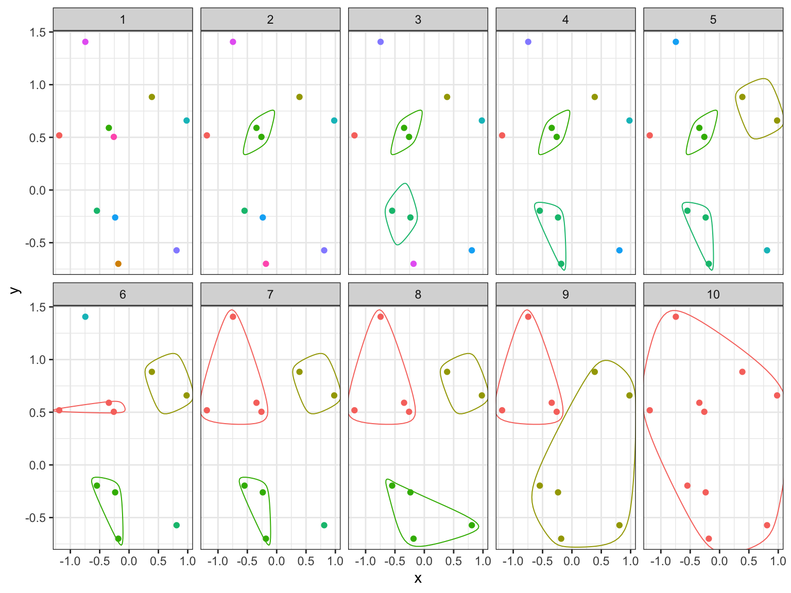
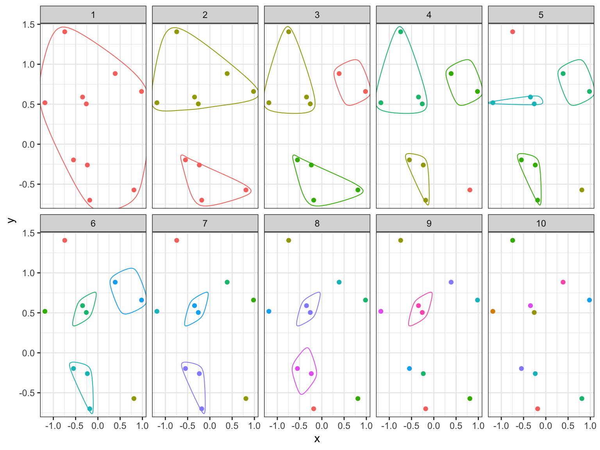
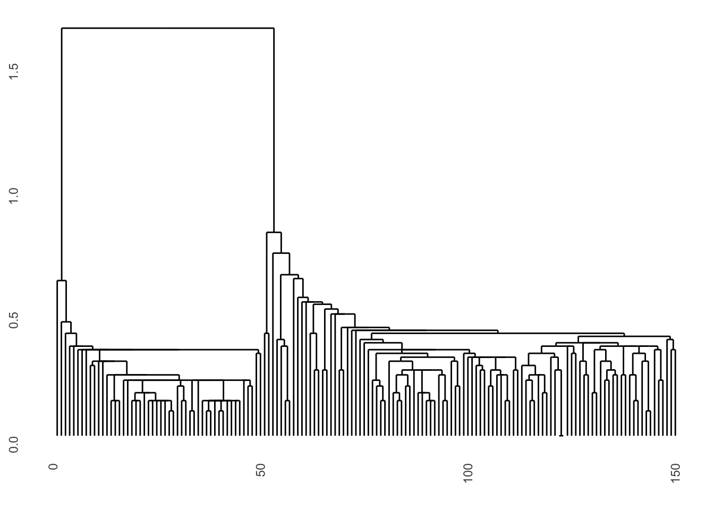
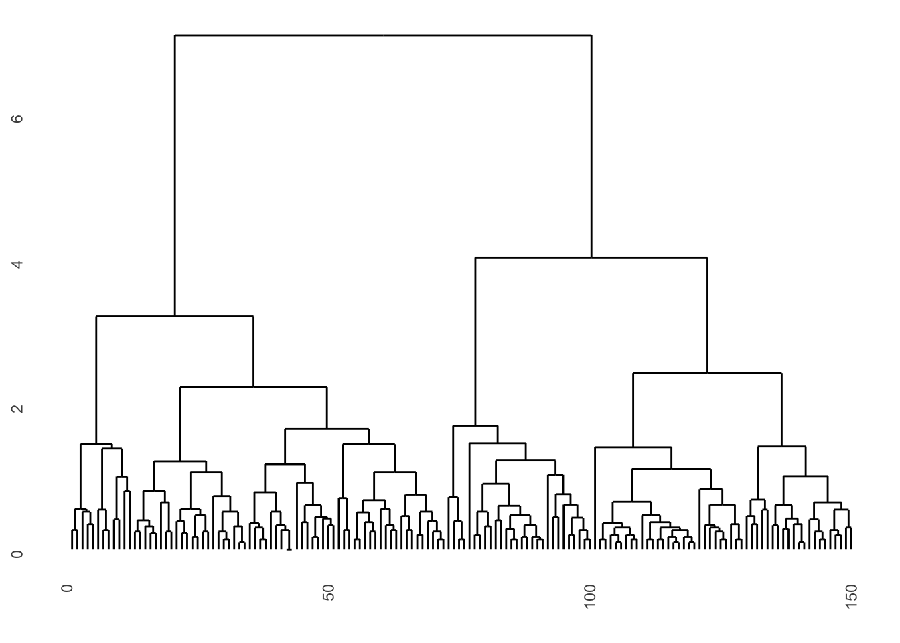
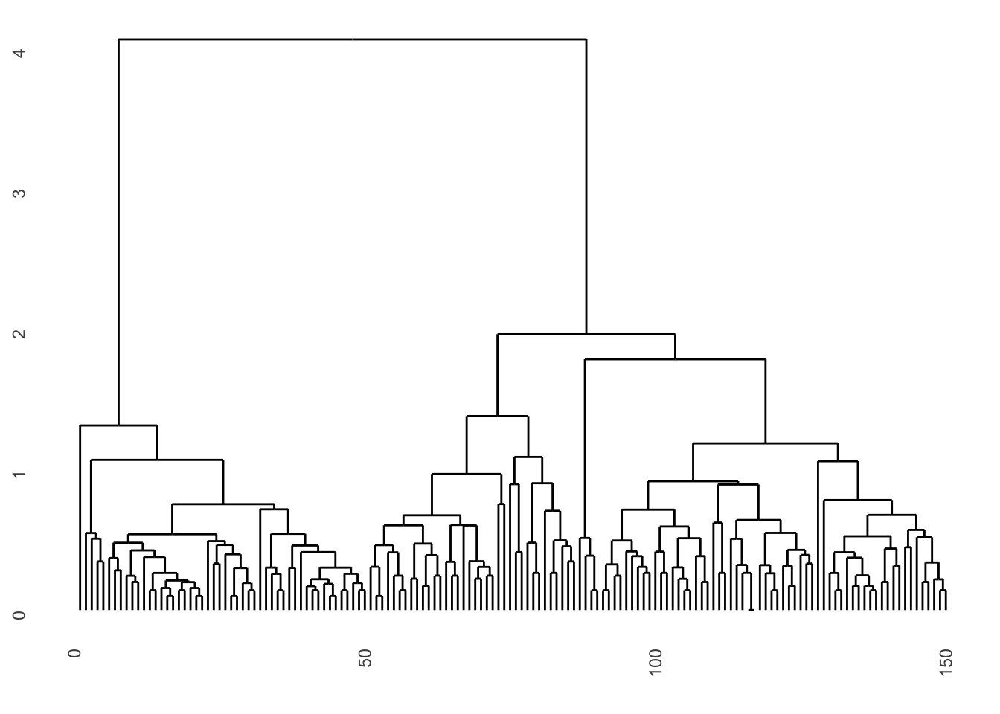
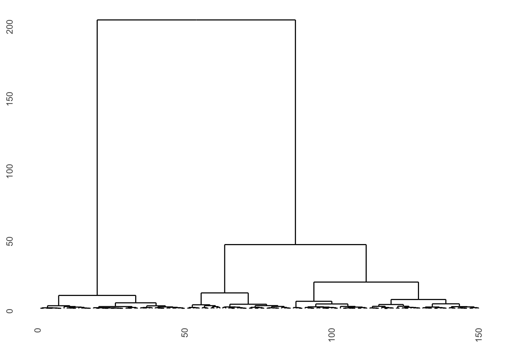

Clustering is about grouping objects together according to similarity. The objects are grouped into clusters so that objects within the same cluster are more similar to one another than to objects in other clusters.
Clustering for a set of \(n\) objects (or observations) is usually performed based on a selection of \(p\) variables (or measurements). The variables are chosen on the basis of prior knowledge.
Ahlqvist et al. (2018)
Model variables were selected on the premise that patients develop diabetes when they can no longer increase their insulin secretion…
A single observation \(i\) can thus be described by the vector \({\mathbf x}_i = [x_{i1}, x_{i2}, \dots, x_{ip}]\).
With only \(p=2\) measurements these measurements can easily be plotted and we could illustrate clusters by colors.

Clustering is commonly used for exploratory data analysis and to identify sub-structures in a data set. There are many types of clustering algorithms, here we will only discuss two of them, K-means and hierarchical clustering.
The K-means clustering aims to divide all objects into exactly \(K\) clusters. \(K\) has to be given to the algorithm. The algorithm minimize the variance within clusters, by iteratively assigning each object to the cluster with the closest centroid.
The centroid of cluster \(k\) is the arithmetic mean of all \(n_k\) objects in the cluster.
\[{\mathbf m}_k = \frac{1}{n_k} \sum_{i=1}^{n_k} {\mathbf x}_{i}\]
The simplest algorithm is Lloyd and Forgy’s (Forgy (1965), Lloyd
(1957)). Other algorithms, e.g. Hartigan and Wong’s (Hartigan and Wong (1979)), the default of the
function kmeans, are modified versions of this to get the
results efficiently. The Lloyd and Forgy’s algorithm is performed as
follows;
Initialization. Select \(k\) initial centroids. The initial centroids can be selected in several different ways. Two common methods are
Assign each object to the closest centroid (in terms of squared Euclidean distance). The squared Euclidean distance between an object (a data point) and a cluster centroid \(m_k\) is \(d_i = \sum_{j=1}^p (x_{ij} - m_{kj})^2\). By assigning each object to closest centroid the total within cluster sum of squares (WSS) is minimized. \[WSS = \sum_{k=1}^K\sum_{i \in C_k}\sum_{j=1}^p (x_{ij} - m_{kj})^2\]
Update the centroids for each of the \(k\) clusters by computing the centroid for all the objects in each of the clusters.
Repeat 2-3 until convergence
K-means clustering requires that we specify the number of clusters, \(k\). How do we select such a \(k\)?
The Elbow method is based on the total within sum of squares, \(WSS\), that the K-means algorithm tries to minimize. By running the algorithm with several different values of \(k\), e.g. 1–10, we can plot WSS as a function of \(k\).

WSS is constantly decreasing as \(k\) increases. The elbow methods suggests that the inflection (bend, elbow) on the curve indicate an optimal number of clusters. In this case, the elbow method suggests that the optimal number of clusters is \(k=3\).
The silhouette value for a single object \(i\) is a value between -1 ans 1 that measure how similar the object is to other objects in the same cluster as compared to how similar it is to objects in other clusters.
The average silhouette over all objects is a measure of how good the clustering is, the higher the value the better is the clustering.

The silhouette value, \(s(i)\), for an object \(i\) in cluster \(C_a\) is calculated as follows;
The average silhouette over all objects is a measure of how good the clustering is, the higher the value the better is the clustering.
All clustering algorithms need a measure of dissimilarity between objects, which is similar to distance but a more general form with less restriction.
Dissimilarities between all pairs of objects can be described in a dissimilarity matrix. Most algorithms are based on symmetric dissimilarities, i.e. when the dissimilarity between a and b is the same as between b and a. Also, most algorithm require non-negative dissimilarities.
K-means uses the squared Euclidean distance as a dissimilarity measure, but there of course other ways to measure the dissimilarity between two objects (data points).
For \(p\) measurements, common dissimilarity measures include;
Euclidean distance \[d_{euc} (x, y) = \sqrt{\sum_{j=1}^{p} (x_j - y_j)^2}\] Squared Euclidean distance \[d_{eucsq} (x, y) = \sum_{j=1}^{p} (x_j - y_j)^2\] Manhattan distance \[d_{man} (x, y) = \sqrt{\sum_{j=1}^{p} |x_j - y_j|}\] Pearson correlation distance
Pearson’s correlation is a similarity measure
\[r = \frac{\sum_{j=1}^p(x_j-\bar x)(y_i-\bar y)}{\sqrt{\sum_{j=1}^p(x_j-\bar x)^2\sum_{j=1}^p(y_j-\bar y)^2}}\]
Using a transformation we can compute a Pearson’s correlation distance
\[d_{pear}(x,y) = \sqrt{1-r}\]
Hierarchical clustering does not require the number of clusters to be specified. Instead of creating a single set of clusters it creates a hierarchy of clusterings based on pairwise dissimilarities.

There are two strategies for hierarchical clustering agglomerative (bottom-up) and divisive (top-down). The agglomerative strategy starts at the bottom with all objects in separate clusters and at each level merge a pair of clusters. The merged pair of clusters are those with the smallest dissimilarity.

The divisive strategy starts at the top with all objects in a single cluster and at each level one cluster is split into two. The split is chosen to produce the two groups with the largest possible dissimilarity.

With \(n\) objects to cluster both strategies will produce a dendrogram representing the \(n-1\) levels in the hierarchy. Each level represent a specific clustering of the objects into disjoint clusters. The heights of the branches in the dendrogram are proportional to the dissimilarity of the merged/split clusters.
Agglomerative clustering starts with all objects in separate clusters and at each level merge the pair of clusters with the smallest dissimilarity. The pairwise dissilimarities between objects are known, but a method for computing dissimilarity between clusters is needed, as so called linkage method.
The dissimilarity between two clusters A and B with objects \(a_1, \dots, a_{n_A}\) and \(b_1, \dots, b_{n_B}\), respectively, can be computed using one of several linkage methods.
Single linkage takes as a cluster dissimilarity the distance between the two closest objects in the two clusters. \[d_{sl}(A, B) = \min_{i,j} d(a_i, b_j)\]

Complete linkage takes as a cluster dissimilarity the distance between the two objects furthest apart in the two clusters. \[d_{cl}(A, B) = \max_{i,j} d(a_i, b_j)\]

Average linkage takes as a cluster dissimilarity the average distance between the objects in the two clusters. \[d_{al}(A, B) = \frac{1}{n_A n_B}\sum_i\sum_j d(a_i, b_j)\]

Ward’s linkage method minimize the within variance, by merging clusters with the minimum increase in within sum of squares. \[d_{wl}(A, B) = \sum_{i=1}^{n_A} (a_i - m_{A \cup B})^2 + \sum_{i=1}^{n_B} (b_i - m_{A \cup B})^2 - \sum_{i=1}^{n_A} (a_i - m_{A})^2 - \sum_{i=1}^{n_B} (b_i - m_{B})^2\] , where \(m_A, m_B, m_{A \cup B}\) are the center of the clusters \(A\), \(B\) and \(A \cup B\), respectively.
Note that Ward’s linkage method should not be combined with any
dissimilarity matrix as it is based on the squared Euclidean distance.
In the R function hclust either the Euclidean or squared
Euclidean distance can be used in combination with the linkage
method='ward.D' or method='ward.D2,
respectively.
